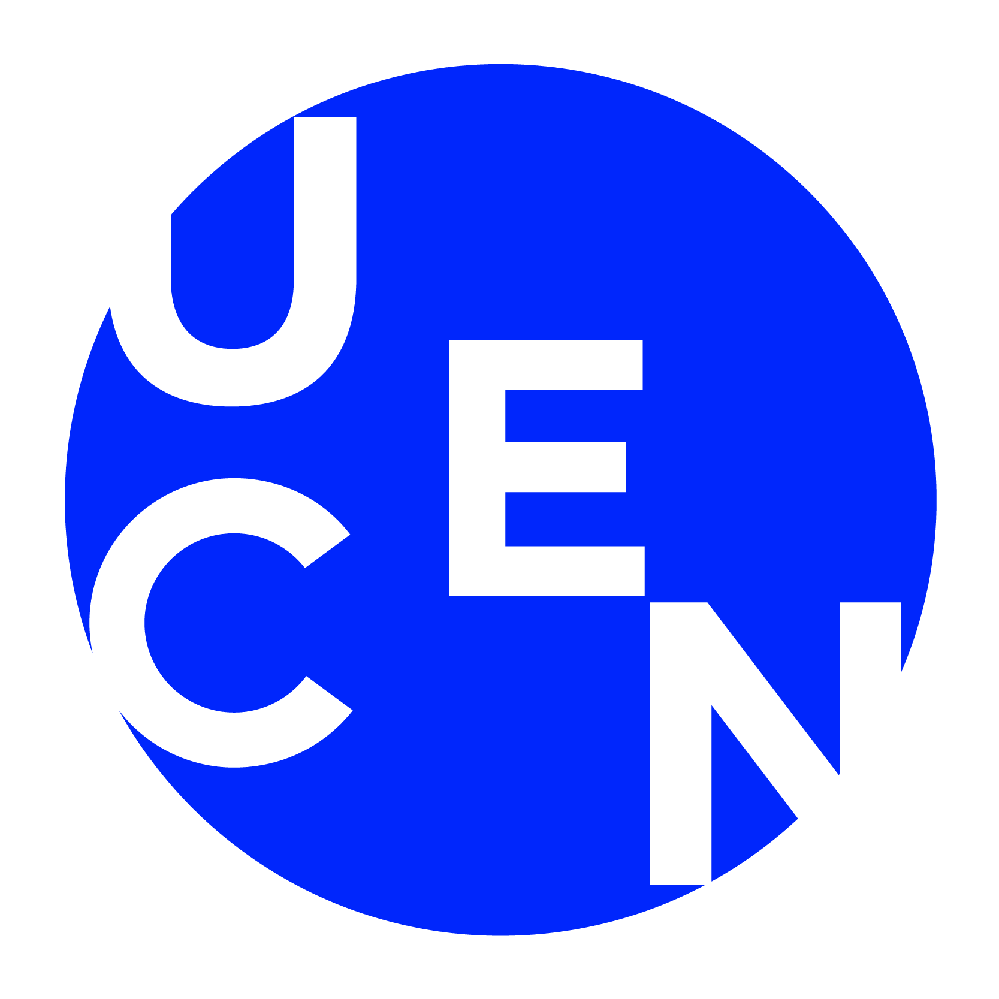
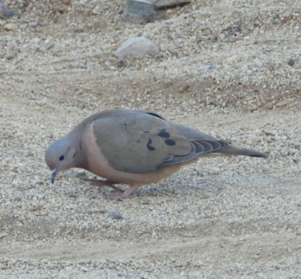
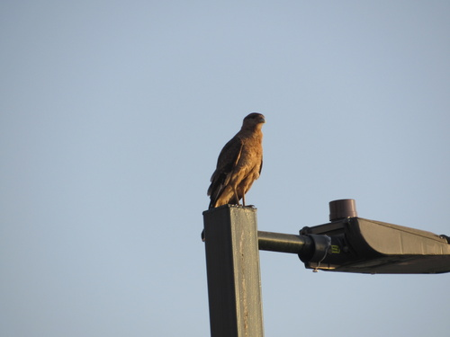
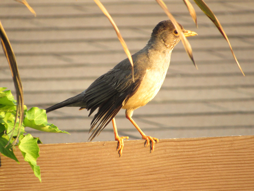
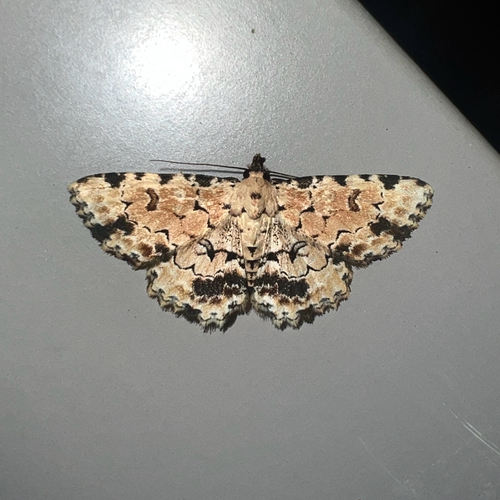

Problemática
En concursos o galerías pueden subirse fotos que no son aves, especies incorrectas o imágenes difíciles de moderar manualmente.

Modelo integrado en una app móvil para aceptar, revisar o rechazar imágenes según su confianza.
El objetivo no es responder siempre, sino reducir errores y dejar trazabilidad cuando el modelo duda.
En concursos o galerías pueden subirse fotos que no son aves, especies incorrectas o imágenes difíciles de moderar manualmente.
La IA permite una primera revisión automática, prioriza casos confiables y deriva a revisión humana las predicciones inciertas.
El agente no publica todo automáticamente: usa umbrales y estados para aceptar, revisar o rechazar.
Datos descargados con licencia abierta desde iNaturalist y organizados por clase para entrenamiento reproducible.
Se separó la moderación en dos modelos para reducir falsos positivos y mantener el flujo móvil liviano.
Dataset desde iNaturalist con licencias CC0, CC-BY y CC-BY-SA, más metadatos de fuente y autoría.
MobileNetV3Small con transferencia desde ImageNet, aumento de datos y clases chilenas del MVP.
Exportación a TensorFlow Lite e incorporación en Flutter para inferencia local en Android.
La demo muestra tres comportamientos esperados: alta confianza, revisión manual y rechazo.

Aceptación automática cercana a 81%.

Predicción confiable y visible en la app.

Queda en revisión y muestra candidatos.

Rechazo fuerte para evitar trolleos.
Se eligió umbral 0.40 para especies porque balancea cantidad de respuestas y confiabilidad. A mayor umbral, menos respuestas automáticas pero más precisión.
Guardar fotos inciertas del celular y etiquetarlas.
Ampliar gradualmente la cobertura de aves chilenas.
Comparar versiones antes de desplegar nuevos modelos.
El MVP ya funciona como agente integrado: reconoce especies del conjunto definido, separa casos de revisión y rechaza imágenes fuera de dominio. Para producción, el foco debe ser aumentar datos propios, revisar errores reales y reentrenar de forma iterativa.